Inicio: del boceto al escritorio
El héroe de Inicio cuenta la historia del escritorio al hacer scroll, y se rebobina al subir. El boceto es lo primero que se pinta; la foto y los fotogramas del libro llegan después de la carga. Con movimiento reducido se ve directamente la última imagen, el libro cerrado. Volver.
Escritorio, 1440 × 900


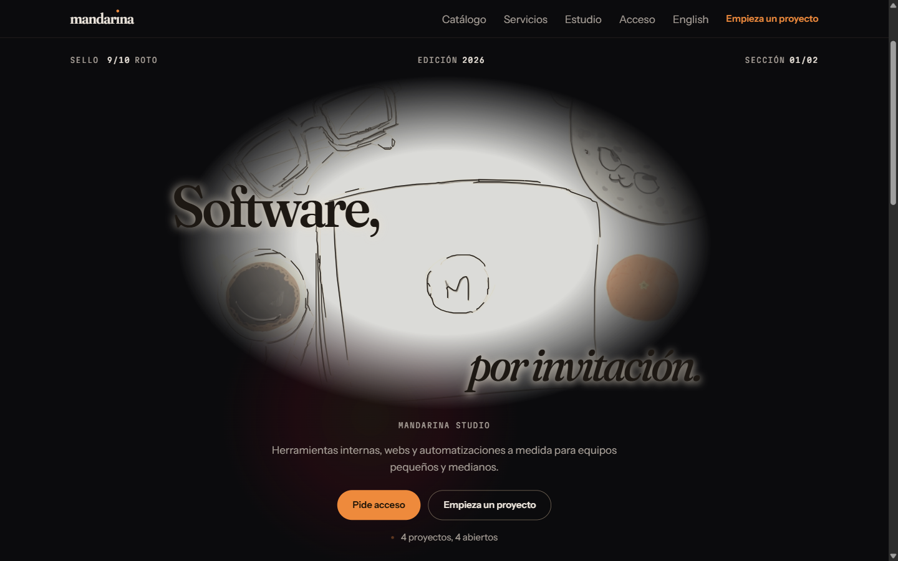

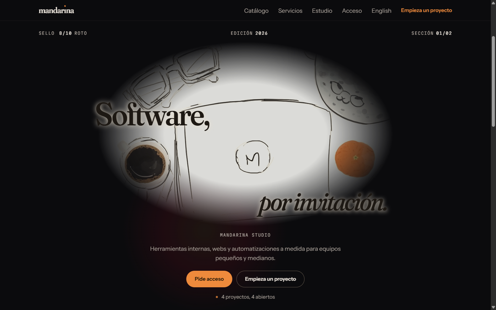

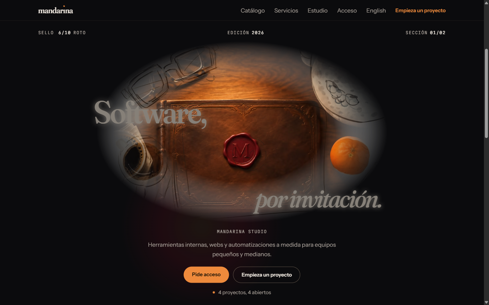

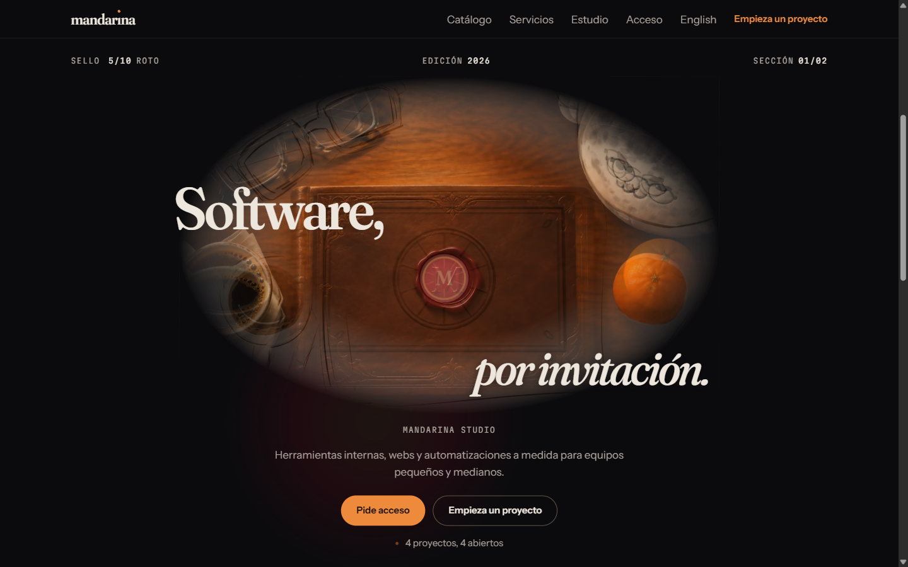

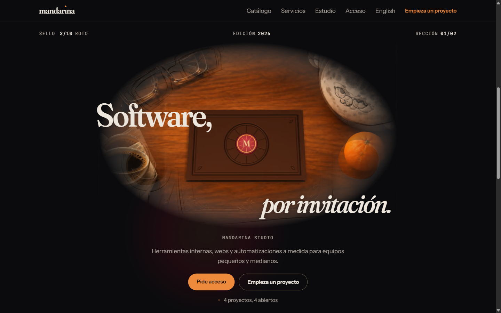

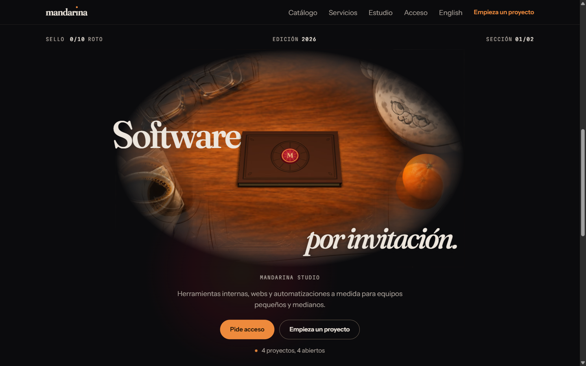
Teléfono, 412 × 823

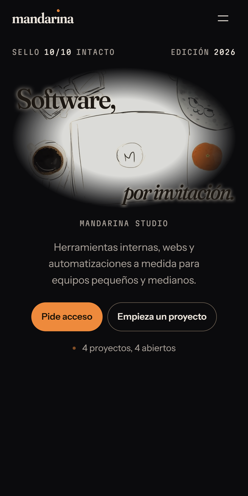

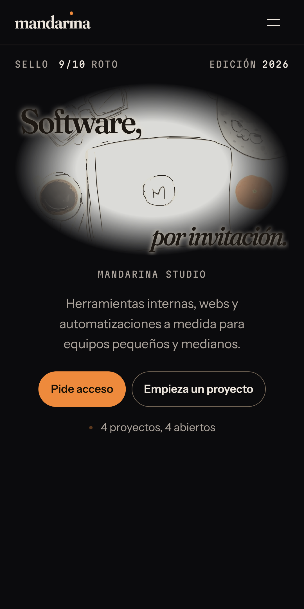


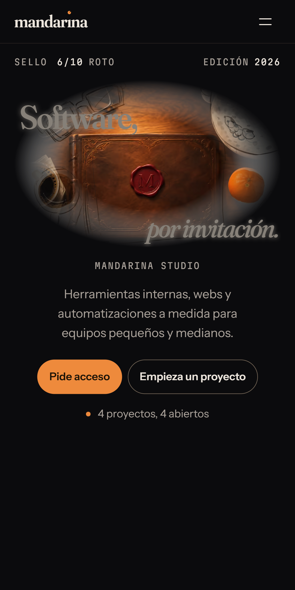

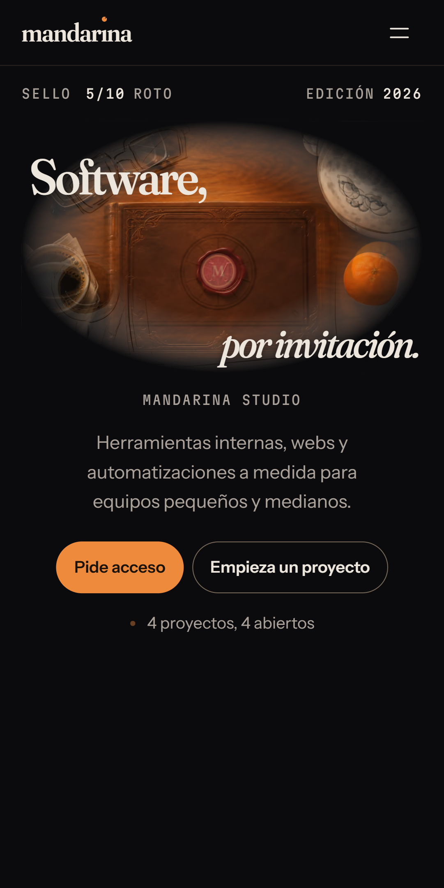

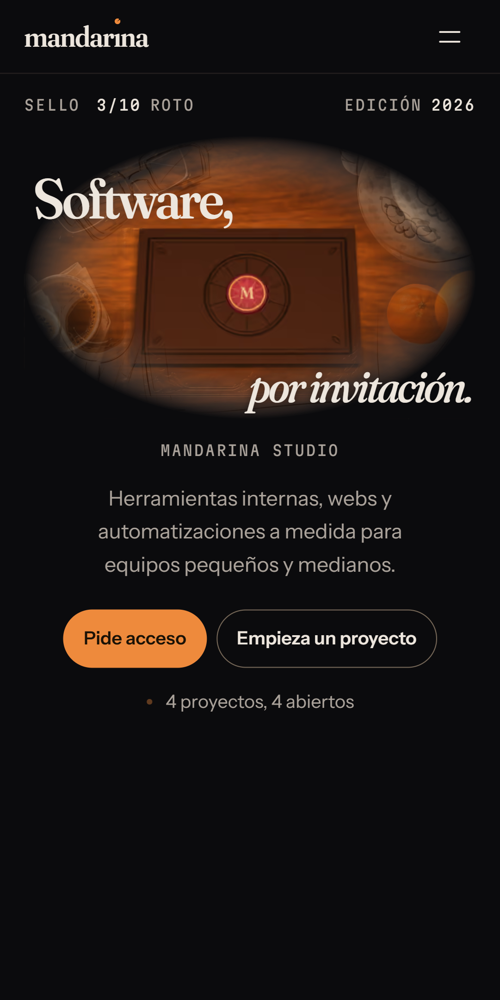

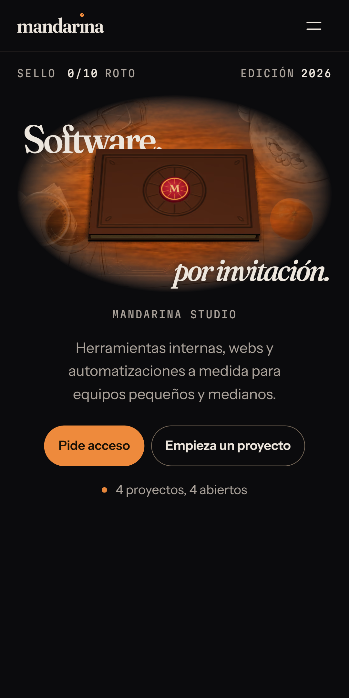